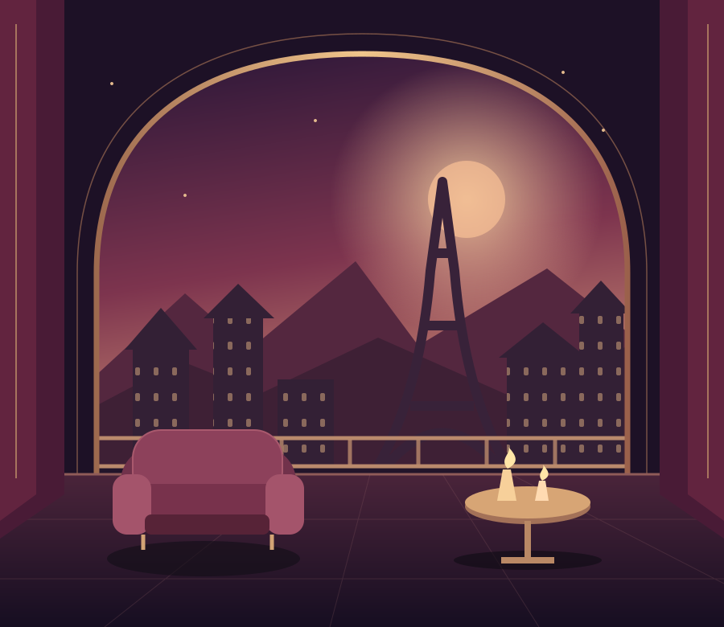

Beziehungen & Storys
Entscheide, wie sich Gespräche, Dates, Zuneigung und Vertrauen entwickeln. Entdecke fiktive erwachsene Charaktere und ihre Geschichten.
Liebe, Reisen, Fashion und Luxus. Entdecke eine Welt voller Entscheidungen – gestalte dein Zuhause, lerne fiktive Charaktere kennen und schreibe eure gemeinsame Geschichte.

Mehr als ein Dating-Simulator: dein persönliches Abenteuer zwischen Alltag, Stil, Reisen und romantischen Momenten.
Entscheide, wie sich Gespräche, Dates, Zuneigung und Vertrauen entwickeln. Entdecke fiktive erwachsene Charaktere und ihre Geschichten.
Stelle Looks zusammen, entdecke Outfitbilder und lege deine Favoriten an – für Alltag, Gala oder Reise.
Von Paris über Dubrovnik bis Bali: 220 Orte und 35 Weltgeschichten laden zum Entdecken ein.
Gestalte Räume mit dem Baukasten. Entdecke sechs Wohnwelten, 76 Immobilien und 51 Wohnobjekte.
Sportwagen, Yachten, Privatjets, Zugreisen, Shops und virtuelle Geschäfte mit Einkommen.
Vorlesen, anpassbare Darstellung, weiche Übergänge, Hoch- und Querformat sowie lokale Spielstände.
Linda Goldig und Ruby Valentine bringen ihre Outfit-Kataloge in die Atelier-Galerie des Spiels. Entdecke Looks, sammle Inspiration und personalisiere die Galerie.
Galerieabbildung ist eine Designillustration, kein echter Spiel-Screenshot. Android: Galerie im privaten Teststand; Store-Fassung separat geplant.
Die wichtigsten Neuerungen aus den jüngsten Versionen.
Spielprototyp mit Atelier-Galerie und anpassbarem Layout.
Debug-APK für Handy und Tablet. Google-Play-Fassung noch nicht veröffentlicht.
Eigenständige Version mit erweiterten Animationen als zukünftiges Projekt.
Ein öffentlicher Store-Download ist noch nicht eingerichtet. Diese Website zeigt den dokumentierten Entwicklungsstand vom 17.11.2026.
Es gibt einen PC-Prototyp und einen Android-Testbuild. Ein öffentlicher Download oder Google-Play-Eintrag ist noch nicht bestätigt.
Nein. Laut Projektkonzept wird ComfyUI bei der Entwicklung zur Bildproduktion verwendet. Das Spiel verwendet vorab bereitgestellte Assets.
Die Kernspiel- und Galeriefunktionen sind für lokale Nutzung vorgesehen. Google-Play-Käufe, Wiederherstellung und bestimmte externe Sprachdienste können eine Internetverbindung benötigen.
Fiktive erwachsene Charaktere, romantische und nicht explizite Geschichten, Mode, Wohnen und Reisen. Eine separate Store-Fassung ist geplant; ihre genaue Altersfreigabe steht noch nicht fest.
In unserer Datenschutzerklärung. Sie beschreibt die Website, lokale Spieldaten und die dokumentierte Billing-Integration.